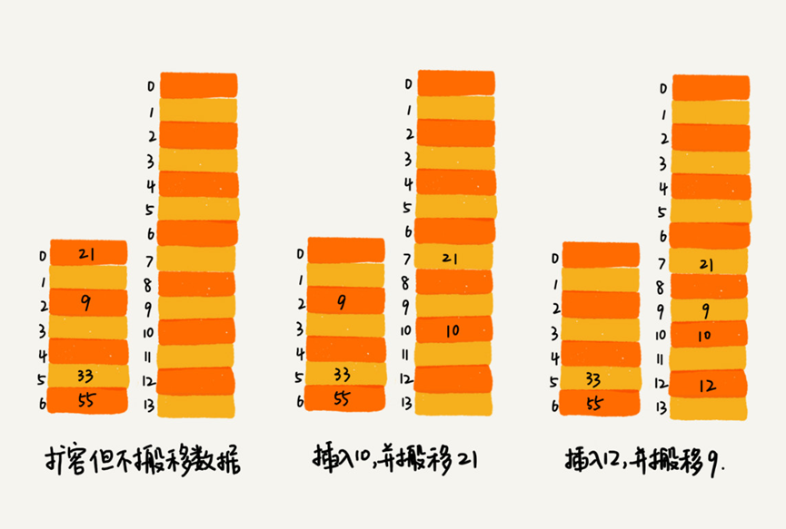
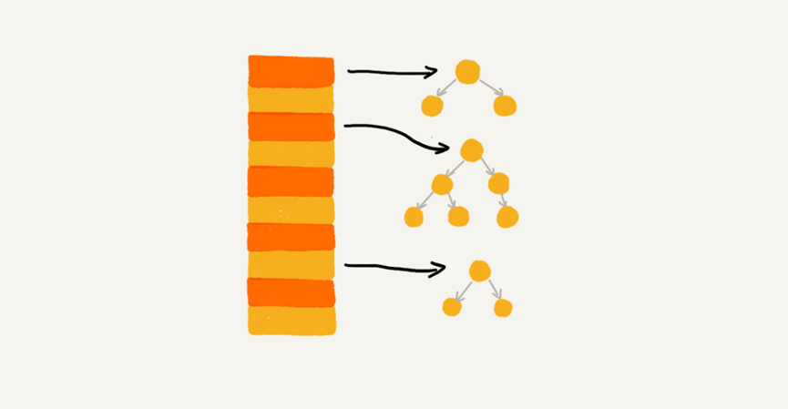

一、如何设计散列函数？
- 要尽可能让散列后的值随机且均匀分布，这样会尽可能减少散列冲突，即便冲突之后，分配到每个槽内的数据也比较均匀。
- 除此之外，散列函数的设计也不能太复杂，太复杂就会太耗时间，也会影响到散列表的性能。
- 常见的散列函数设计方法：直接寻址法、平方取中法、折叠法、随机数法等。
二、如何根据装载因子动态扩容？
- 如何设置装载因子阈值？
① 可以通过设置装载因子的阈值来控制是扩容还是缩容，支持动态扩容的散列表，插入数据的时间复杂度使用摊还分析法。
② 装载因子的阈值设置需要权衡时间复杂度和空间复杂度。如何权衡？
如果内存空间不紧张，对执行效率要求很高，可以降低装载因子的阈值；相反，如果内存空间紧张，对执行效率要求又不高，可以增加装载因子的阈值。
- 如何避免低效扩容？分批扩容
① 分批扩容的插入操作：当有新数据要插入时，我们将数据插入新的散列表，并且从老的散列表中拿出一个数据放入新散列表。每次插入都重复上面的过程。这样插入操作就变得很快了。
② 分批扩容的查询操作：先查新散列表，再查老散列表。
③ 通过分批扩容的方式，任何情况下，插入一个数据的时间复杂度都是$O(1)$。
三、如何选择散列冲突解决方法？
- 常见的
2中方法：开放寻址法和链表法。- 大部分情况下，链表法更加普适。而且，我们还可以通过将链表法中的链表改造成其他动态查找数据结构，比如红黑树、跳表，来避免散列表时间复杂度退化成$O(n)$，抵御散列冲突攻击。

- 当数据量比较小、装载因子小的时候，适合采用开放寻址法。
这也是Java中的ThreadLocalMap使用开放寻址法解决散列冲突的原因。- 基于链表的散列冲突处理方法比较适合存储大对象、大数据量的散列表，而且，比起开放寻址法，它更加灵活，支持更多的优化策略，比如用红黑树代替链表。
思考
何为一个工业级的散列表？工业级的散列表应该具有哪些特性？结合学过的知识，我觉的应该有这样的要求：
- 支持快速的查询、插入、删除操作；
- 内存占用合理，不能浪费过多空间；
- 性能稳定，在极端情况下，散列表的性能也不会退化到无法接受的情况。
如何设计这样一个散列表呢？根据前面的知识，从
3个方面来考虑设计思路：
- 设计一个合适的散列函数；
- 定义装载因子阈值，并且设计动态扩容策略；
- 选择合适的散列冲突解决方法。
你熟悉的编程语言中，哪些数据类型底层是基于散列表实现的？散列函数是如何设计的？散列冲突是通过哪种方法解决的？是否支持动态扩容呢？
JDK HashMap中hash函数的设计，确实很巧妙：
首先hashcode本身是个32位整型值，在系统中，这个值对于不同的对象必须保证唯一（JAVA规范），这也是常说的，重写equals必须重写hashcode的重要原因。
获取对象的hashcode以后，先进行移位运算，然后再和自己做异或运算，即：hashcode ^ (hashcode >>> 16)，这一步甚是巧妙，是将高16位移到低16位，这样计算出来的整型值将“具有”高位和低位的性质。
最后，用hash表当前的容量减去一，再和刚刚计算出来的整型值做位与运算。
进行位与运算，很好理解，是为了计算出数组中的位置。
但这里有个问题：为什么要用容量减去一？
因为A % B = A & (B - 1)，所以，(h ^ (h >>> 16)) & (capitity -1) = (h ^ (h >>> 16)) % capitity，可以看出这里本质上是使用了「除留余数法」
综上，可以看出，hashcode的随机性，加上移位异或算法，得到一个非常随机的hash值，再通过「除留余数法」，得到index，整体的设计过程与“散列函数”设计原则非常吻合！
工业级散列表举例分析
- 初始大小
HashMap默认的初始大小是16，当然这个默认值是可以设置的，如果事先知道大概的数据量有多大，可以通过修改默认初始大小，减少动态扩容的次数，这样会大大提高HashMap的性能。
- 装载因子和动态扩容
最大装载因子默认是0.75，当HashMap中元素个数超过0.75*capacity（capacity表示散列表的容量）的时候，就会启动扩容，每次扩容都会扩容为原来的两倍大小。
- 散列冲突解决方法
HashMap底层采用链表法来解决冲突。
即使负载因子和散列函数设计得再合理，也免不了会出现拉链过长的情况，一旦出现拉链过长，则会严重影响HashMap的性能。
于是，在JDK1.8版本中，为了对HashMap做进一步优化，引入了红黑树。
而当链表长度太长（默认超过8）时，链表就转换为红黑树。
我们可以利用红黑树快速增删改查的特点，提高HashMap的性能。当红黑树结点个数少于8个的时候，又会将红黑树转化为链表。
因为在数据量较小的情况下，红黑树要维护平衡，比起链表来，性能上的优势并不明显。
- 散列函数
散列函数的设计并不复杂，追求的是简单高效、分布均匀。
1 | int hash(Object key) { |
其中，
hashCode()返回的是Java对象的hash code。比如String类型的对象的hashCode()就是下面这样：
1 | public int hashCode() { |


评论加载中